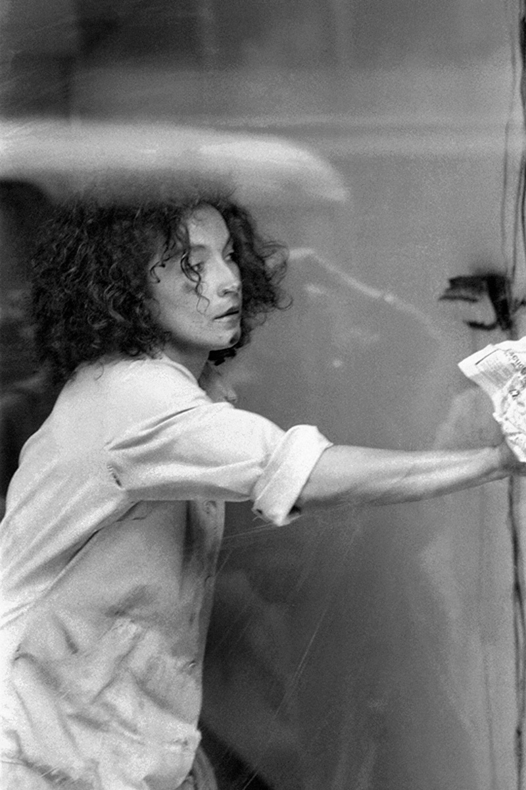
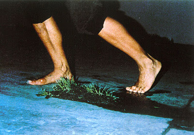
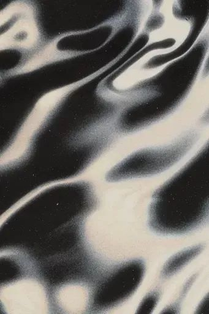

Explora las obras.
Puedes mover las postales libremente por la pantalla y abrir cada obra con doble click.

Una cosa es una cosa

Vitrina

Divina Proporción

Pionera del arte de acción en Colombia (1954–2008)
Nació en Armenia, Quindío, y se formó en teatro experimental. Fue una de las artistas más importantes del performance en Colombia y América Latina.
Transformó acciones domésticas y cotidianas en actos rituales, contemplativos y políticos.
En 1990 fue la primera artista en ganar el Salón Nacional de Artistas con un performance.
Propuso el “pensamiento de la mano”, donde el conocimiento también surge del cuerpo y la repetición.
Su obra critica la velocidad del mundo contemporáneo, el consumo y la desconexión sensible.
Explora las obras.
Puedes mover las postales libremente por la pantalla y abrir cada obra con doble click.


